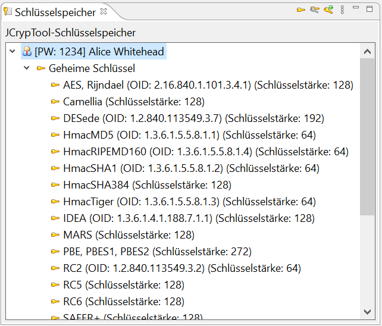

Der JCrypTool-Schlüsselspeicher enthält alle vordefinierten und selbsterstellten Schlüssel für kryptografische Verfahren. Er enthält unter anderem Schlüssel für RSA, ElGamal, AES und ECDH. Für den User "Alice" gibt es zu allen Verfahren vordefinierten Schlüssel: Diese erlauben einen schnellen Start im JCrypTool und besitzen alle dasselbe Passwort 1234.
Der Schlüsselspeicher wird bei jedem Neustart von JCrypTool geleert. Es ist derzeit nicht möglich, Schlüssel für die nächste Sitzung aufzubewahren.

Der Schlüsselspeicher wird in beiden Perspektiven (der Standard- und Algorithmen-Perspektive) benötigt. Er stellt Schlüssel für bestimmte kryptografische Verfahren zur Verfügung.
In der Standard-Perspektive kann der Schlüsselspeicher über das Menü Algorithmen -> Schlüsselspeicher geöffnet werden. In der Algorithmen-Perspektive ist er standardmäßig geöffnet. Falls er nicht geöffnet ist, kann er über das Menü Fenster -> Sicht anzeigen -> Schlüsselspeicher geöffnet werden.
Der Schlüsselspeicher erlaubt das Erzeugen, Betrachten, Löschen, Importieren und Exportieren von Schlüsseln. Viele dieser Aktionen sind mit einem Rechtsklick auf einen Schlüssel verfügbar.